Our work
Before & after transformations
Drag any slider below to reveal the before and after. These are the kinds of results we deliver — a complete, smooth-finished makeover using your existing cabinets.
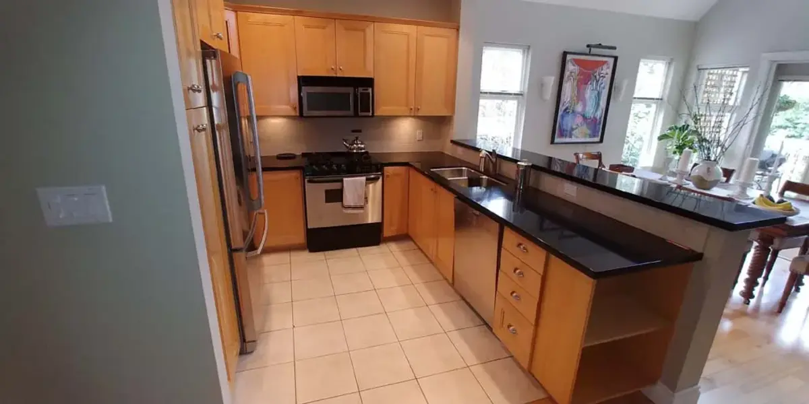
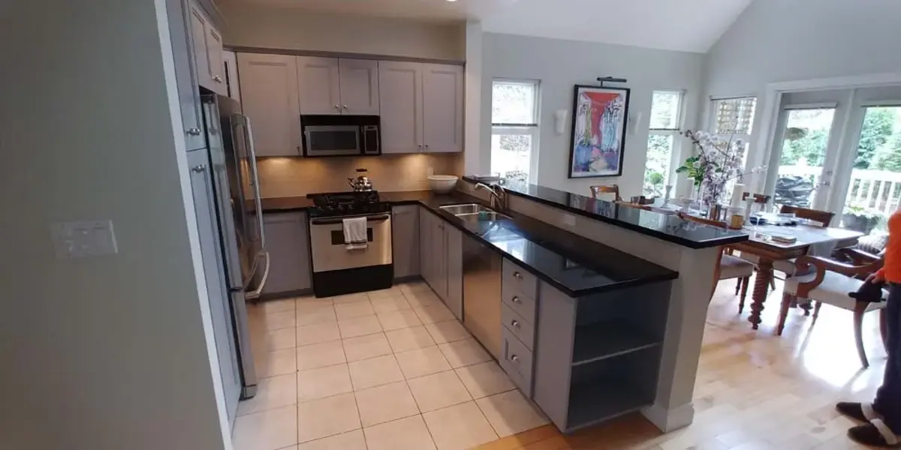
BeforeAfterOak kitchen → Soft gray
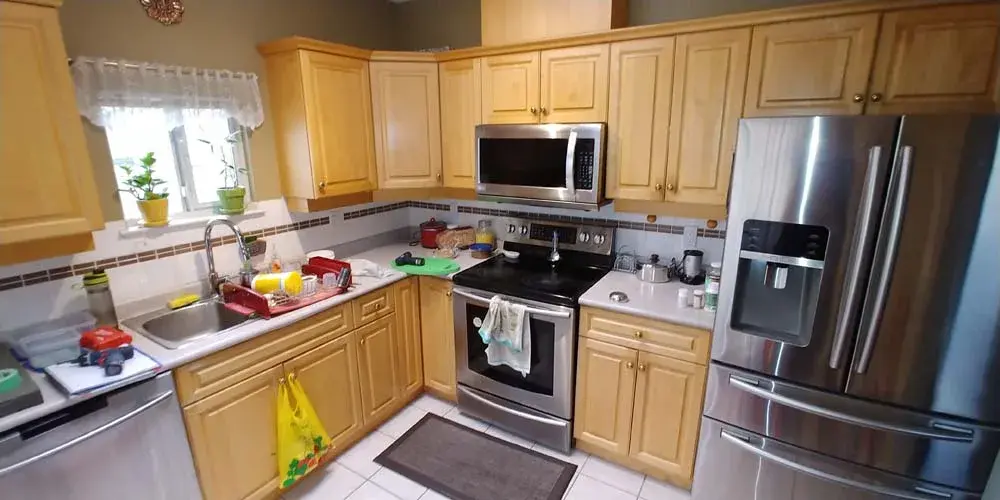
BeforeAfterHoney maple → Crisp white
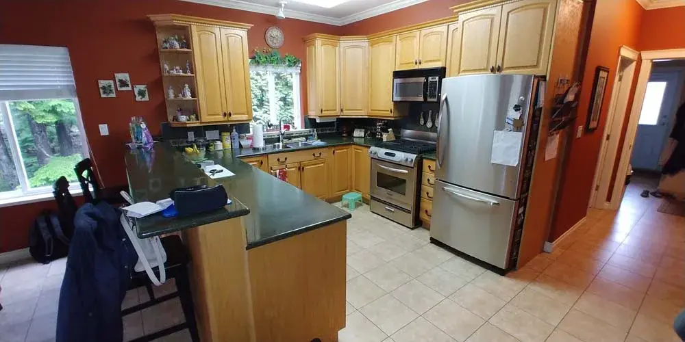
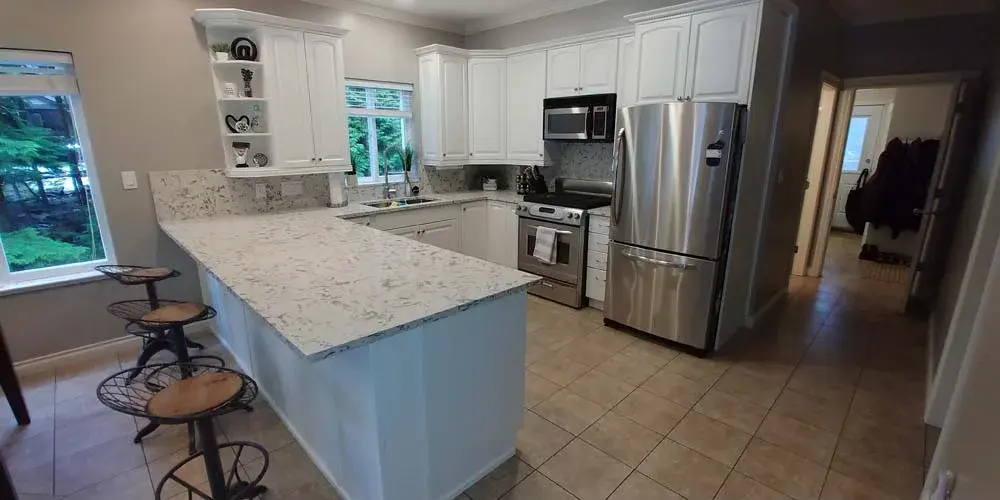
BeforeAfterOak & bold walls → Bright white
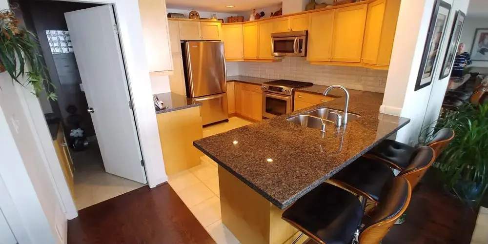
BeforeAfterOak with granite island → White
Finished projects
A selection of completed cabinet refinishing work across the Lower Mainland.
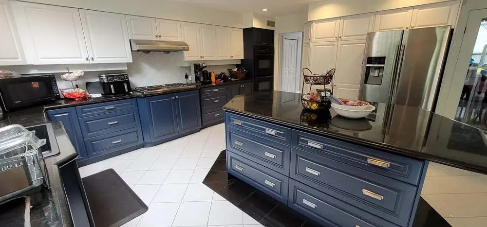

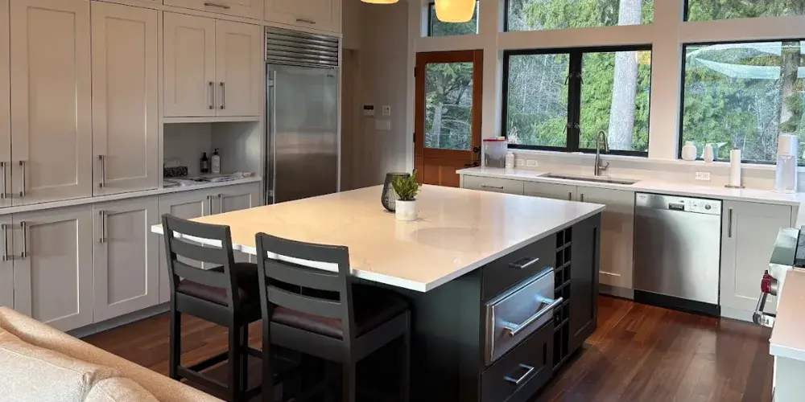
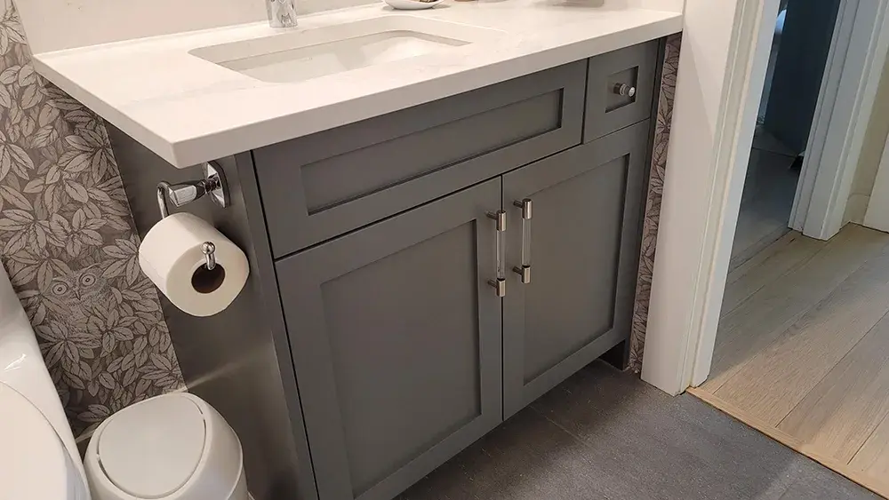
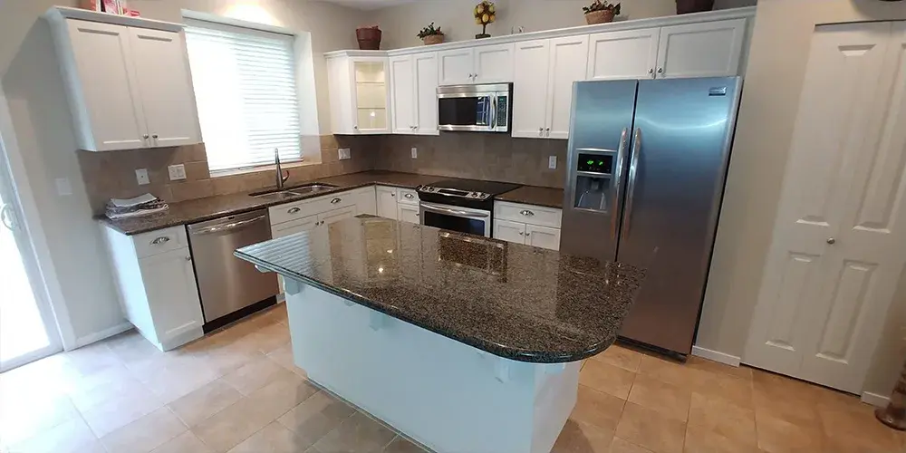
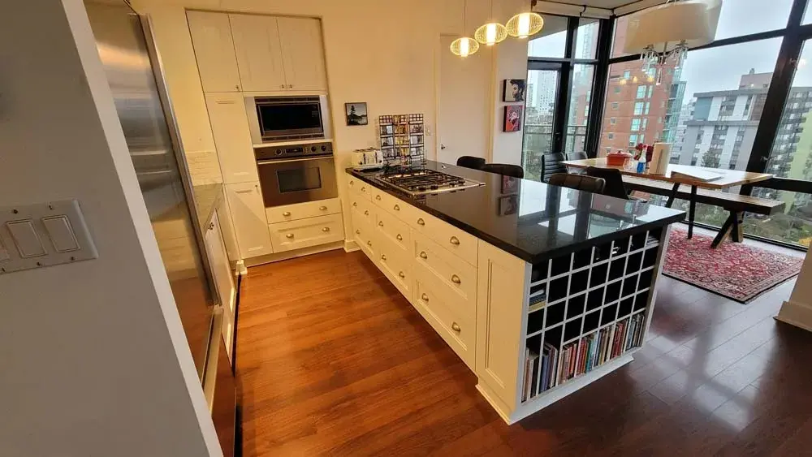
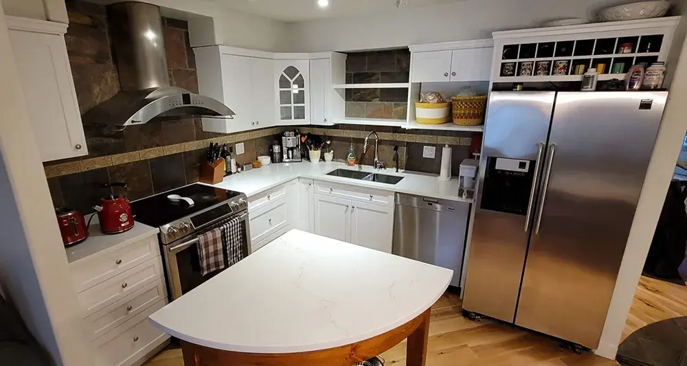
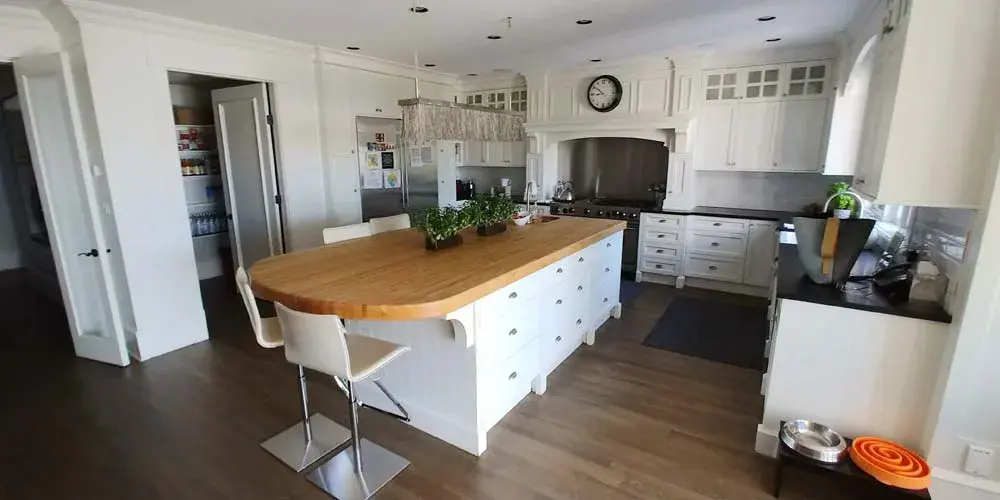
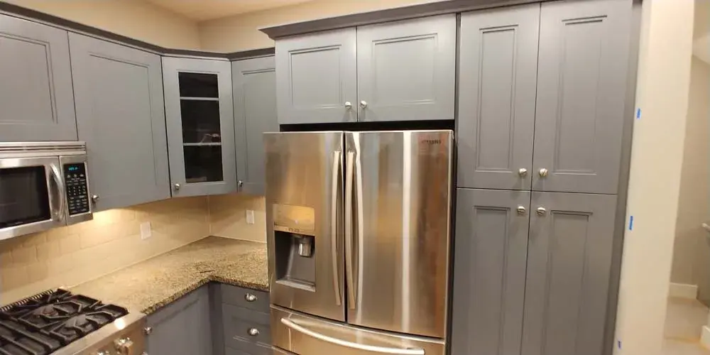
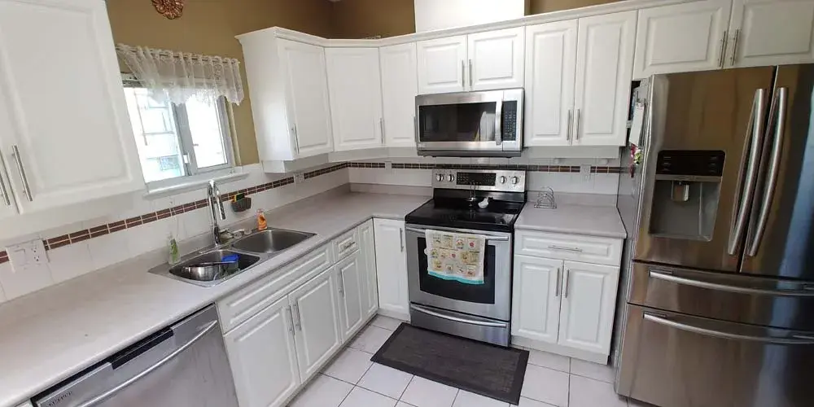
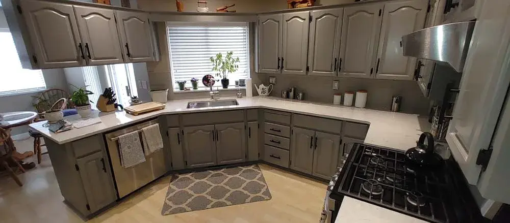
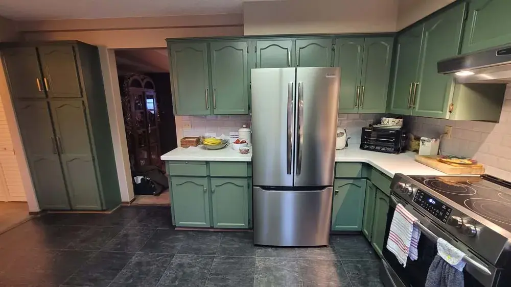
Picture your kitchen transformed
Tell us the colour you have in mind and we'll show you what's possible.
Request a free estimate